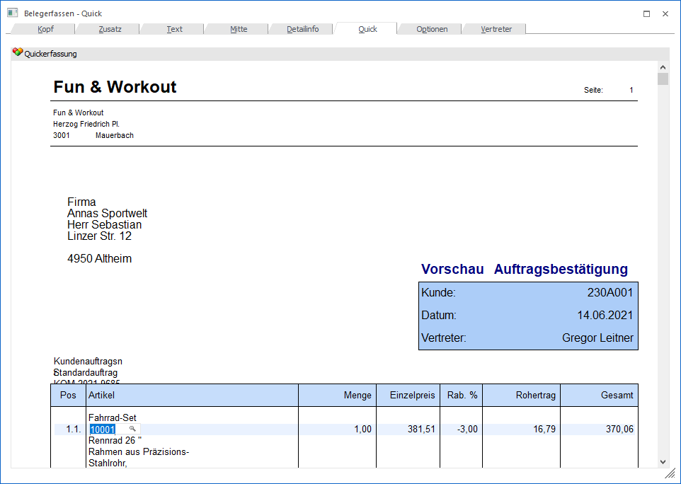
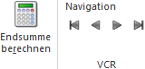

Im sogenannten "Quick-Erfassen" kann die Erfassung des Belegs in Form einer Formularansicht "live" erfolgen. Dieser Art der Erfassung kann durch Anwahl des Registers "Quick" in der Belegerfassung oder über den Menüpunkt "Quick Erfassen" aufgerufen werden.
Hinweis 1
Weitere Informationen bezüglich des Erfassens von Belegen und den Buttons des Programms "Belegerfassen" sind dem Kapitel Belegerfassen zu entnehmen.
Hinweis 2
Sie können wahlweise zwischen der Beleg Mitte und dem Quick Erfassen wechseln. Die eingegebenen Werte werden Ihnen mit der Ansicht mit übernommen.

Ø Eingabefelder wechseln
Grundsätzlich können man sich per Tabulatortaste von einem Feld zum Nächsten bewegen und mit der Tastenkombination Shift + Tabulator wieder zurück.
Nach Eingabe der Artikelnummer steht man im zweiten Feld, hier Bezeichnung. Bestätigt man diese mit der Eingabetaste oder mit dem Tabulator und wird man in das nächste Feld geführt und kann die Menge eingeben.
Mit der Pfeil-nach-Unten-Taste kommen man in die nächste Zeile.
Hinweis
Wenn die Artikelnummer freigelassen wird, so erkennt dieses die WinLine und es wird automatisch ein Textbaustein erzeugt.
Ø Eingabemöglichkeiten
Grundsätzlich können all jene Werte eingeben bzw. editieren, die auch im Belegerfassen möglich sind. Diese sind im Detail:
Kopf
ü PLZ Fakturenadresse
ü Ort Fakturenadresse
ü Anrede
ü Name Fakturenadresse
ü Zu Handen Fakturenadresse
ü Straße Fakturenadresse
ü Straße 2 Fakturenadresse
ü Textfeld 1
ü Notizfeld
ü Datum Angebot
ü Datum Auftrag
ü Datum Lieferschein
ü Datum Faktura
Mitte
ü USt-Code
ü Kostenstelle
ü Kostenträger
ü Artikelnummer
ü Erlöskonto
ü Colli
ü Lieferdatum
ü Bezeichnung
ü Liefertage
ü Provisionscode
ü Lieferwoche
ü Lieferjahr
ü Einzelpreis
ü Menge
ü Rabatt % 1
ü Rabatt % 2
ü Notizblock
Sonderbuttons - Register "Quick"

Folgende Buttons steht nur im Register "Quick" zur Verfügung (die Beschreibung der weiteren Buttons können dem Kapitel Belegerfassen entnommen werden):
Ø Endsumme rechnen
Durch Drücken dieses Buttons wird die Endsumme des Beleges gerechnet. Diese kann editiert werden, die Differenz wird auf den Rabatt auf- bzw. abgeschlagen.
Hinweis
Solange dieser Button aktiviert bleibt, wird bei jeder Änderung die Summe neu gerechnet.
Ø VCR-Buttons
Über die so genannten VCR-Buttons kann durch Mausklick zwischen den Belegzeilen geblättert werden.
ü  Damit kann
die erste Belegzeile angesprochen werden.
Damit kann
die erste Belegzeile angesprochen werden.
ü  Damit kann
die vorherige Belegzeile angesprochen werden.
Damit kann
die vorherige Belegzeile angesprochen werden.
ü  Damit kann
die nächste Belegzeile angesprochen werden.
Damit kann
die nächste Belegzeile angesprochen werden.
ü  Damit kann
die letzte Belegzeile angesprochen werden.
Damit kann
die letzte Belegzeile angesprochen werden.
Hinweis
Beim Blättern zwischen den Belegzeilen werden Ausprägungen standardmäßig "überblättert", d.h. es wird von einem Hauptartikel zum nächsten geblättert. Sollten auch Ausprägungen berücksichtigt werden, so muss beim Blättern zusätzlich die STRG-Taste gedrückt werden.